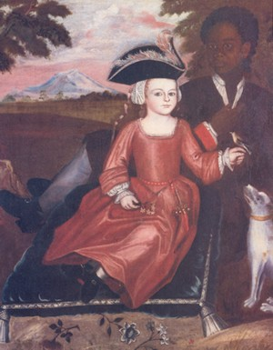

by
Stefan Bielinski
This engaging portrait entitled "Boy of the Van Rensselaer Family" is thought to have been painted by Scottish born limner John Heaton probably during the 1730s when the artist was living and working in Albany. It is unique in the visual record of early Albany. It also is the only contemporary image of an eighteenth century Afro Albanian that we have thus far encountered!
This portrait depicts a relationship documented in the wills of early Albany people which allocated slaves to the children and other kin of the testator.
The Van Rensselaer child was probably less than five years old and could be a number of individuals who were born during the 1720s and 30s. Since the Van Rensselaers were among the largest and longest tenured slaveholders with servants in Albany and on the manor, many more possibilities exist for the identity of the older Afro-Albanian boy. Although personal servants were considered part of the master's household, the relative grandeur of their clothing helps signify the difference in their status. Anne Grant recalled the relationship in her Memoirs of an American Lady. We continually puzzle after the identities of the principals in this important resource!
This appears to be the only known likeness of an eighteenth-century Afro-Albanian! James Eights's streetscape set in the early 1800s has given us a representation we believe to be Afro-Albanian matriarch Dinnah Jackson.
Portrait: Copy of Heaton's painting copied from a plate reproduced in Patria and explained therein. The 45 X 35 oil painting has been dated to the 1730s. See p. 196. A slightly differently titled and more graphic online reproduction and explanation contains additional information including that it is in a "private collection." Once a staple of topical presentations, over the past two decades this image seems to have been less frequently utilized. This is puzzling! Perhaps the recently published The Pinkster King will be instructive.
privately posted 4/20/04; updated 4/10/17